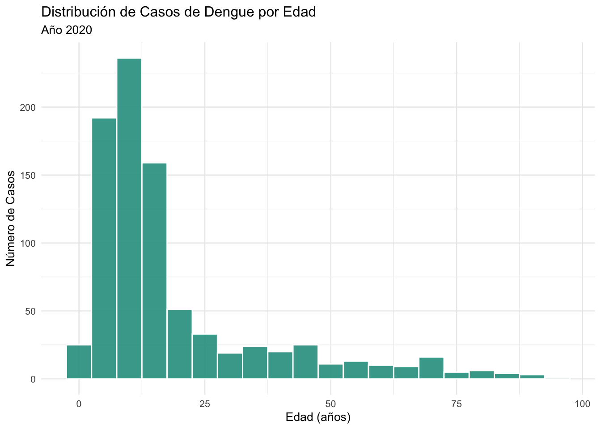
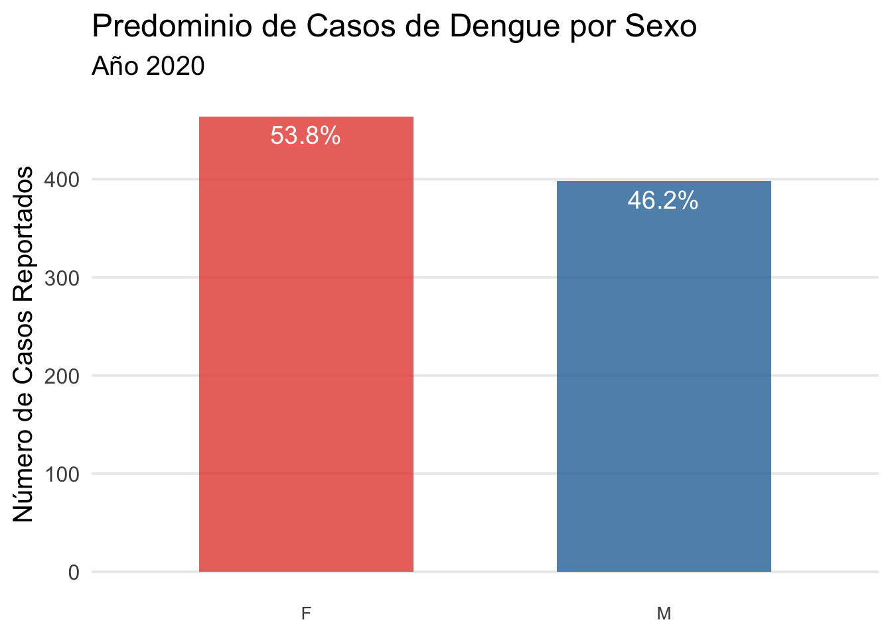
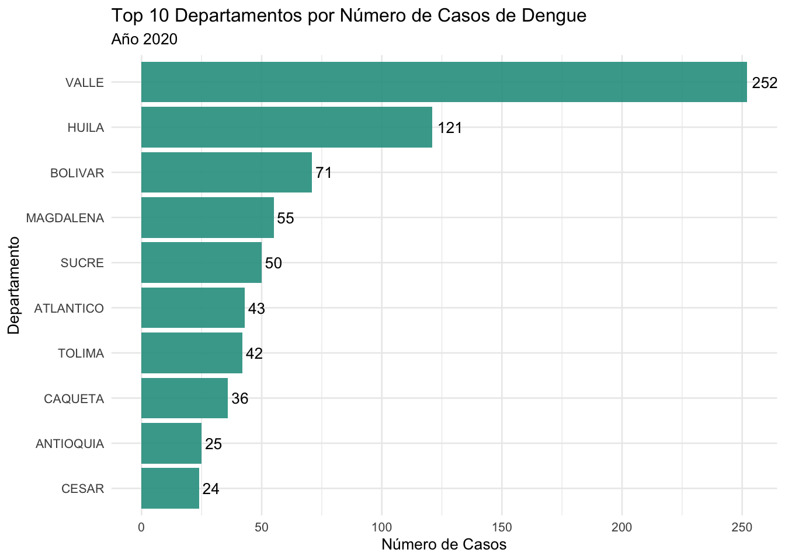
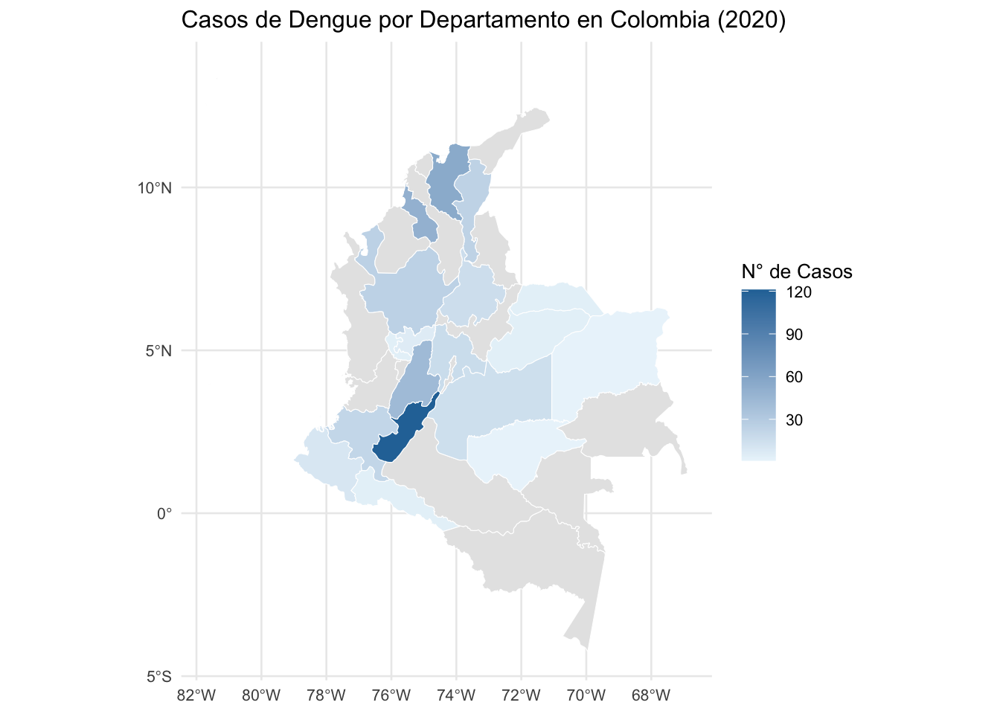
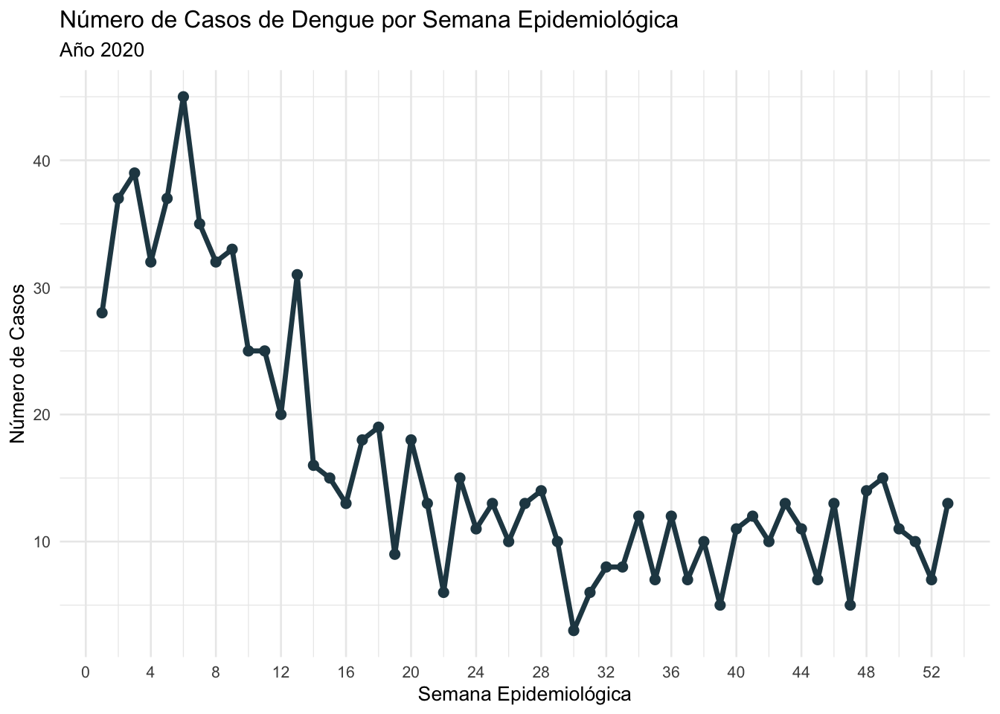

# A tibble: 862 × 11
FEC_NOT ANO SEMANA EDAD SEXO AREA ESTRATO TIP_CAS CON_FIN
<date> <dbl> <dbl> <dbl> <fct> <fct> <dbl> <fct> <fct>
1 2020-04-22 2020 17 6 <NA> Rural 1 3 1
2 2020-09-06 2020 36 15 <NA> Urbana 3 2 1
3 2020-03-25 2020 12 6 <NA> Urbana 2 2 1
4 2020-02-22 2020 8 10 <NA> Urbana 3 3 1
5 2020-03-25 2020 13 5 <NA> Urbana 2 2 1
6 2020-12-10 2020 49 63 <NA> Urbana 3 2 1
7 2020-03-06 2020 9 10 <NA> Rural 1 2 1
8 2020-10-22 2020 43 39 <NA> Urbana NA 3 1
9 2020-05-18 2020 20 10 <NA> Urbana 1 3 1
10 2020-12-09 2020 49 7 <NA> Urbana 2 3 1
# ℹ 852 more rows
# ℹ 2 more variables: Departamento_ocurrencia <chr>, Municipio_ocurrencia <chr>2 Análisis Exploratorio de Datos
2.1 Cargue de datos
2.1.1 Dataset
2.2 Visualización de Datos Univariada

- Análisis de la Distribución de Casos de Dengue por Edad (Año 2020)
El histograma presenta la distribución de frecuencias de los casos de dengue notificados en el año 2020, agrupados por rangos de edad. El eje horizontal (\(X\)) representa la edad en años, mientras que el eje vertical (\(Y\)) cuantifica el número de casos.
El análisis del gráfico revela los siguientes puntos clave:
Alta Incidencia en Grupos de Edad Temprana: La mayor concentración de casos se observa en la población pediátrica y juvenil. Específicamente, el rango de edad con la frecuencia más alta se sitúa aproximadamente entre los 10 y 15 años, superando los 200 casos. Los rangos adyacentes, que abarcan desde la primera infancia hasta la adultez joven (aproximadamente 5 a 20 años), también muestran una incidencia significativamente elevada.
Distribución Asimétrica Positiva (Sesgo a la Derecha): La distribución es marcadamente asimétrica. Después de alcanzar su punto máximo en la juventud, la frecuencia de casos desciende de manera pronunciada y sostenida a medida que aumenta la edad. Esto indica que la incidencia de la enfermedad es sustancialmente menor en la población adulta y adulta mayor.
Baja Incidencia en la Población Adulta y Mayor: A partir de los 25-30 años, el número de casos por cada rango de edad se reduce drásticamente, manteniéndose en niveles bajos y relativamente estables a lo largo de la vida adulta. En los grupos de edad más avanzada (mayores de 60 años), la frecuencia de casos es mínima, aproximándose a cero.
Conclusión: El análisis de la distribución etaria para los casos de dengue en 2020 demuestra que los niños, adolescentes y adultos jóvenes constituyen el grupo demográfico con mayor vulnerabilidad a la enfermedad. Este patrón epidemiológico sugiere que las estrategias de salud pública, como las campañas de prevención y la vigilancia activa, deberían priorizar a estos grupos de edad para mitigar el impacto del dengue en la población.
2.2.1 Distribución por sexo
| Tabla 2: Distribución de Casos de Dengue por Sexo | |||
|---|---|---|---|
| Año 2020 | |||
| SEXO | Frecuencia | Porcentaje | |
| F | 464 | 53.8% | |
| M | 398 | 46.2% | |
| Total | — | 862 | — |
La Tabla 2 muestra cómo se distribuyeron los casos de dengue según el sexo de los pacientes durante el año 2020.
Total de Casos: Se registraron un total de 862 casos de dengue en ese año.
Casos en Mujeres: El sexo femenino (F) presentó una mayor cantidad de casos, con 464, lo que representa el 53.8% del total.
Casos en Hombres: El sexo masculino (M) tuvo 398 casos, equivalentes al 46.2% del total.
2.2.2 Distribución de Frecuencia por tipo de sexo

El gráfico de barras compara la cantidad de casos de dengue reportados entre mujeres y hombres durante el año 2020.
Predominio Femenino: El gráfico muestra que hubo una mayor cantidad de casos en el sexo femenino. Las mujeres (F) representaron el 53.8% del total de los casos.
Casos Masculinos: Los hombres (M) constituyeron el 46.2% de los casos.
2.2.3 Casos por Departamento

Este gráfico de barras muestra los 10 departamentos de Colombia con el mayor número de casos de dengue reportados durante el año 2020.
Liderazgo de Valle: El departamento del Valle fue, por un amplio margen, el más afectado, con un total de 252 casos.
Gran Diferencia: La cifra del Valle es más del doble que la del segundo departamento, Huila, que registró 121 casos.
Resto del Top 5: Después de Huila, le siguen Bolívar con 71 casos, Magdalena con 55 y Sucre con 50.
2.2.4 Mapa Dengue

El mapa coroplético que ilustra la distribución geográfica de los casos de dengue por departamento en Colombia durante el año 2020.
El mapa muestra claramente que la mayor concentración de casos se encuentra en el suroccidente del país. Hay un departamento en particular, coloreado con el azul más oscuro, que representa el principal foco de la enfermedad en 2020 (corresponde al departamento del Valle, como vimos en el gráfico de barras anterior).
Otras zonas afectadas: La región Andina y la región Caribe también presentan una incidencia notable, con varios departamentos en tonos de azul intermedio.
Zonas con baja incidencia: En contraste, la vasta región oriental del país (la Orinoquía y la Amazonía) muestra muy pocos o ningún caso reportado, apareciendo en colores muy claros o grises.
En resumen, el mapa revela que la carga del dengue en Colombia durante 2020 no fue homogénea, sino que se concentró fuertemente en la región suroccidental y, en menor medida, en las regiones Andina y Caribe.
2.2.5 Casos de Dengue a lo Largo del Tiempo

El gráfico muestra la evolución del número de casos de dengue a lo largo de las 52 semanas epidemiológicas del año 2020.
Inicio de Año (Brote Principal): El año comenzó con una alta incidencia de dengue. Se observa un pico muy pronunciado alrededor de la semana 6 (mediados de febrero), donde se reportaron más de 40 casos semanales. Esto indica el momento de mayor transmisión de la enfermedad durante el año.
Tendencia a la Baja: Después de este pico, el número de casos comenzó a descender de forma general hasta aproximadamente la mitad del año (semana 28-30).
Segunda Mitad del Año (Nivel Endémico): Desde la semana 30 en adelante, la cantidad de casos se estabilizó en un nivel mucho más bajo, fluctuando generalmente entre 5 y 15 casos por semana. Esto sugiere que la transmisión se mantuvo en un nivel bajo pero constante.
En resumen, el gráfico evidencia un brote significativo de dengue en los primeros dos meses de 2020, seguido por una disminución y estabilización de los casos a niveles más bajos durante el resto del año.
2.2.6 Tabla Cruzada
TIP_CAS
|
Total | p-value1 | ||
|---|---|---|---|---|
| 2 | 3 | |||
| Área de Residencia | 0.024 | |||
| 1 | 474 (68%) | 224 (32%) | 698 (100%) | |
| 2 | 58 (74%) | 20 (26%) | 78 (100%) | |
| 3 | 70 (81%) | 16 (19%) | 86 (100%) | |
| Total | 602 (70%) | 260 (30%) | 862 (100%) | |
| 1 Pearson’s Chi-squared test | ||||
Analiza si existe una relación entre el lugar donde vive una persona y el tipo de dengue que contrae.
- ¿Qué se está comparando? Filas (Área de Residencia): Muestra los casos de dengue divididos en tres áreas geográficas diferentes (etiquetadas como 1, 2 y 3).
- Columnas (TIP_CAS): Clasifica los casos de dengue en dos tipos (etiquetados como 2 y 3). Generalmente, en la vigilancia epidemiológica, estos números representan diferentes niveles de severidad (por ejemplo, “Dengue con signos de alarma” y “Dengue grave”).
- ¿Cuál es el resultado principal?
P-value 0.024 es menor que 0.05, podemos concluir que existe una asociación real y estadísticamente significativa entre el área de residencia y el tipo de dengue.
- ¿Qué significa esa “asociación”? Significa que la distribución de los tipos de dengue no es la misma en las tres áreas de residencia. La probabilidad de tener un tipo de dengue u otro parece depender del área en la que vive la persona.
Por ejemplo, si observamos los porcentajes:
En el Área 3, el 81% de los casos son del tipo 2 y solo el 19% son del tipo 3.
En el Área 1, la proporción es diferente: 68% son del tipo 2 y 32% son del tipo 3.
Esta diferencia en las proporciones es lo que la prueba estadística (Chi-cuadrado de Pearson) ha detectado como “significativa”.
En resumen: La tabla demuestra con evidencia estadística que el lugar de residencia es un factor que está asociado a la severidad o al tipo de dengue que presentan los pacientes.